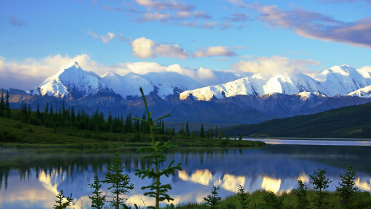

Aquamerica, demandez le programme !
Ça y est, plus qu'une semaine avant le début de notre grande aventure. L'excitation monte, l'impatience grandit, les premiers frissons nous gagnent déjà. Dans quelques jours nous serons tous deux sur les routes américaines On the road dans la plus pure tradition Kerouacquienne et Into the Wild tels des Christopher McCandless des temps modernes.
Durant 4 mois nous allons sillonner les routes, les pistes et les chemins d'Amérique du Nord, d'Anchorage à México. Voici les grandes lignes de la partie nord-américaine de notre périple :
1. A la découverte du Grand Nord
Quand : du 25/08/2015 au 22/09/2015
Où : Alaska - Yukon - British Columbia - Alberta

Notre voyage commencera le 25 août à Anchorage, capitale de l'Etat d'Alaska. Notre premier grand défi sera d'y acheter une voiture capable de nous emmener sur plusieurs milliers de kilomètres jusqu'en Arizona. Une fois notre voiture trouvée nous nous élancerons à la découverte du Grand Nord et de ses immensités sauvages. Les parcs du Denali en Alaska, de Jasper et de Banff au Canada n'attendent que nous pour nous révéler leur beauté puissante et mystérieuse.
Entre voiture, randos et camping nous irons à la rencontre des responsables des parcs de glaciers et de chercheurs en sciences atmosphériques pour parler fonte des glaces et réchauffement climatique.
2. Vis ma vie d'éleveur de bisons
Quand : du 23/09/2015 au 18/10/2015
Où : Melville, Montana
Pour la deuxième partie de notre voyage nous nous arrêterons un mois travailler dans une ferme d'élevage du Montana. C'est plus exactement dans un élevage de bisons que nous irons réaliser pour de vrai le rêve de devenir cow boy l'espace de quelques semaines. Idéalement située à une heure du parc de Yellowstone, nous espérons trouver au cours de cette étape la paisibilité et la beauté des grands espaces américains.
Nous profiterons de cet arrêt pour faire un focus sur l'utilisation de l'eau dans l'agriculture et dans l'élevage. Saviez-vous que 15,000L d'eau étaient nécessaires à la production d'un kg de viande de boeuf ?!
3. La Californie terre de rêves éveillés
Quand : du 19/10/2015 au 15/11/2015
Où : Utah - Nevada - Californie - Arizona
Nous continuerons notre route en voiture sur les terres plus chaudes des Etats du Sud. Quelques villes mythiques telles que Las Vegas, San Francisco et Los Angeles se dresseront sur notre passage. Nous les digérerons à coups de parcs non moins fabuleux : Yosemite, Death Valley et l'inégalable Grand Canyon.
La Californie est en proie depuis plusieurs années à une sécheresse sans précédents ! Ce sera l'occasion pour nous de rencontrer des professeurs qui étudient le problème et des entrepreneurs qui tentent d'y apporter des réponses innovantes.
4. A la conquête du Mexique
Quand : du 16/11/2015 au 20/12/2015
Où : México, Mexique.
Exit les US, buenos dias America latina !
Durant un mois nous allons séjourner à México, capitale du Mexique pour approfondir la question de l'aridité de la région. Nous essayerons de travailler au contact direct des entrepreneurs mexicains qui tentent de résoudre les graves problèmes de manque d'eau du pays. Ce sera également l'occasion pour Antoine d'apprendre quelques mots d'espagnol et pour tous deux de découvrir un pays chargé d'histoire. Les aztèques n'ont qu'à bien se tenir, nous sommes prêts à en découdre avec leur culture pour percer leurs mystères !
Si par hasard vous vous trouvez sur notre trajet à un moment donné faites nous signe ! Nous serions ravis de pouvoir échanger avec ceux qui nous suivent de vive voix ;)
Et si vous connaissez des gens qui pourraient nous héberger sur le chemin prévenez nous, on est également preneur !
A bientôt